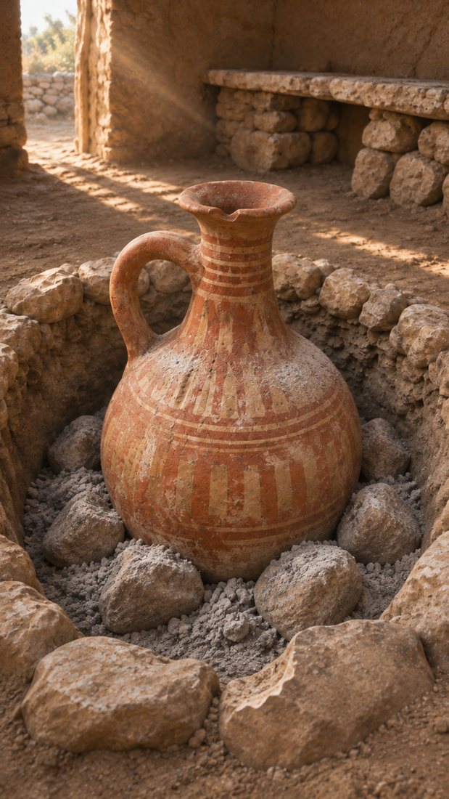
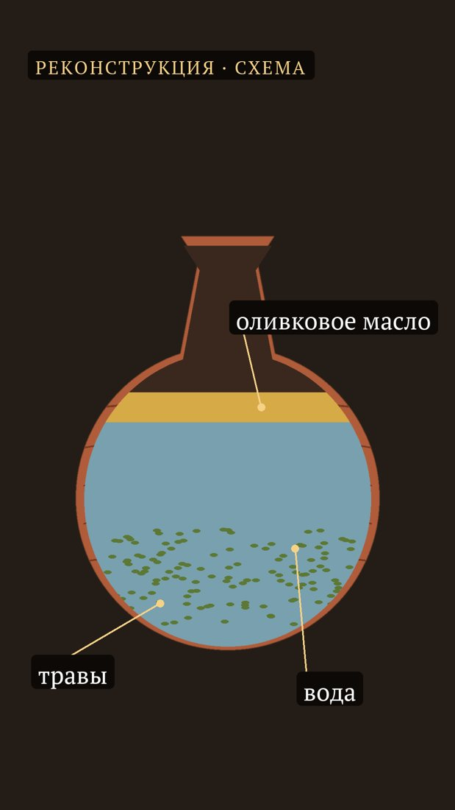
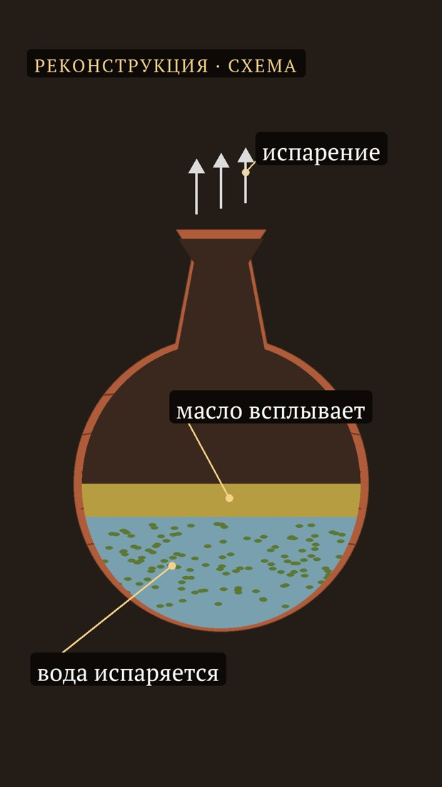
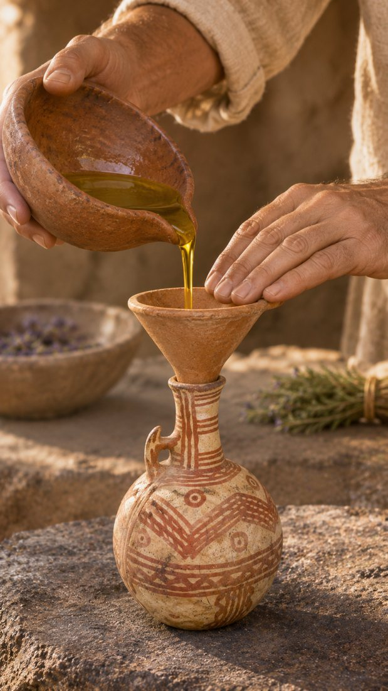
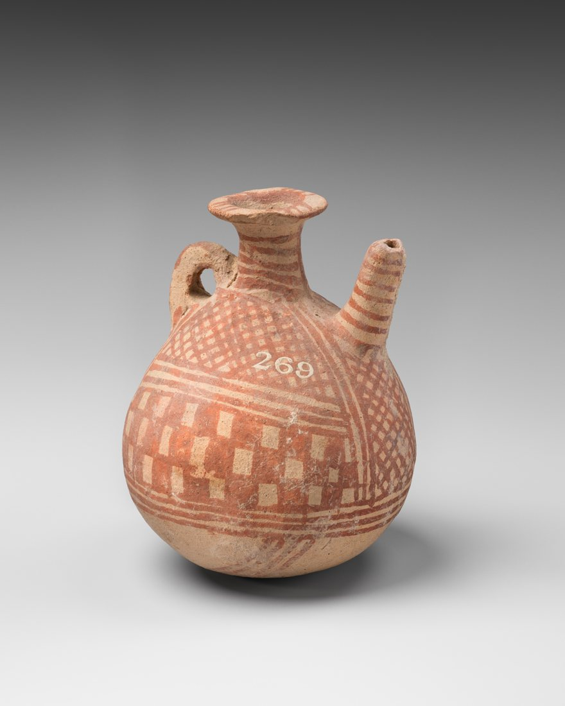
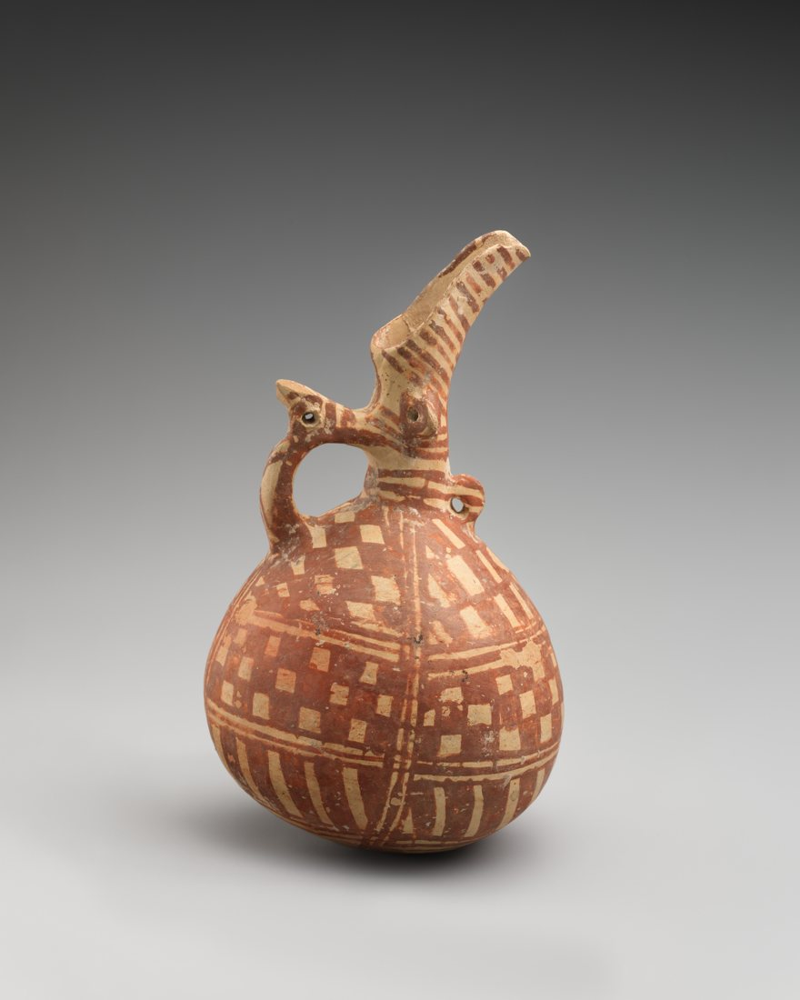
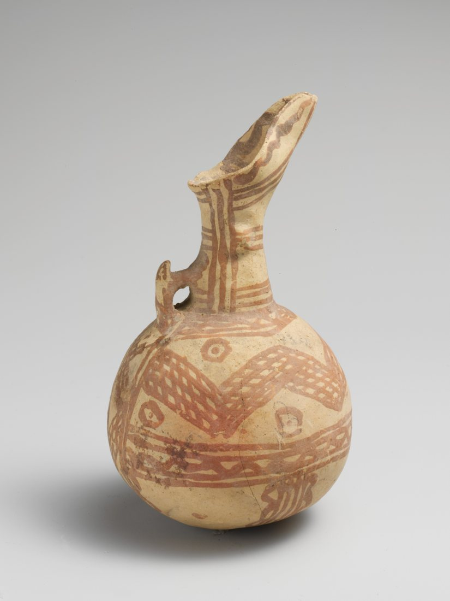

Духи в кувшине
Как в мастерской Пиргос-Маврораки на Кипре почти 4000 лет назад превращали травы и оливковое масло в духи. Подробности к видео Amadeo Perfume Wardrobe.

- 14ям с кувшинами, обложенных камнями и известью
- 3составляющие в кувшине: вода, травы, оливковое масло
- днистолько кувшин стоял в тёплой яме
Где мы остановились
В первой серии археологи нашли на Кипре мастерскую, которую около 1850 года до н. э. накрыло землетрясение. В углу маслодавильни было 14 ям, в каждой — кувшин в пепле, а в остатках — оливковое масло и следы трав. Осталось понять, как из масла и трав делали духи.
Шаг 1. Растереть травы
Вокруг ям лежали базальтовые тёрки и пестики, чаши и миски с носиком. На них готовили ароматное сырьё: травы растирали на камне, чтобы они легче отдали свой запах.
Шаг 2. Кувшин: вода, травы и масло
По описанию руководителя раскопок Марии Розарии Бельджорно, в кувшин клали поровну воду, растения и оливковое (или миндальное) масло.


Шаг 3. Несколько дней в тёплой яме
Кувшин ставили в яму, в пепел, среди горячих камней, и оставляли на несколько дней. Яму держали тёплой, но не горячей. Вода понемногу испарялась, а ароматные вещества трав переходили в масло. Некоторые кувшины, по словам раскопщиков, запечатывали известью, чтобы сохранить тепло.
Почему именно масло? Масло долго не портится и держит запах. Ещё древнегреческий учёный Теофраст писал, что масло служит «носителем» духов, потому что оно хранится очень долго.
Главное — не перегреть. Теофраст объясняет, что духи варили в сосудах, стоявших в воде, а не прямо на огне: при сильном жаре масло пропадает и пахнет гарью. Поэтому тепло в яме должно было быть мягким.
Шаг 4. Разлить и не потерять ни капли
Готовое масло черпаками и через глиняные воронки разливали во флаконы. У флаконов для духов было узкое горло: так драгоценное масло не проливали и не тратили зря. Воронки, черпаки и такие флаконы нашли прямо у ям.

Как выглядели такие флаконы
Ниже — настоящие кипрские сосуды той же эпохи из Метрополитен-музея. Они не из Пиргоса, но показывают, какой формы были флаконы с узким горлом.



Что дальше
Чьё имя и рецепт дошли до нас на глине? В третьей серии — женщина-парфюмер Таппути и её рецепт на клинописной табличке.
Об этом видео
Видео создано с помощью ИИ. Ведущий — ИИ-образ Умара, основателя Amadeo Perfume Wardrobe, созданный с его согласия, с клоном его голоса. Картинки и схемы с подписью «Реконструкция» созданы по описаниям раскопок; они показывают, как могло быть, а не реальные находки. Сосуды из Метрополитен-музея — той же эпохи, не из Пиргоса. Музыка и звуки: Google Flow Music. / შექმნილია AI-ს დახმარებით
Источники
- M. R. Belgiorno, «L'isola di Afrodite e i suoi profumi vecchi di 4000 anni», каталог выставки, Musei Capitolini, 2007. PDF
- Пресс-релиз CNR и Капитолийских музеев «I profumi di Afrodite e il segreto dell'olio», 13 марта 2007. PDF
- M. R. Belgiorno, The Perfume of Cyprus, 3-е издание, 2017. PDF
- Теофраст, «О запахах» (Concerning Odours), пер. A. Hort, Loeb, 1916, гл. IV–V. archive.org
- «Perfumery», Encyclopaedia Britannica, 11-е издание, 1911.
Изображения
- Кипрские кувшинчики, ок. 1900–1600 до н. э.: The Metropolitan Museum of Art, 74.51.1109, 74.51.1102, 74.51.1154, Open Access (CC0).
- Реконструкции и схемы: созданы для Amadeo Perfume Wardrobe.
Amadeo Perfume Wardrobe, Тбилиси · amadeoperfume.ge